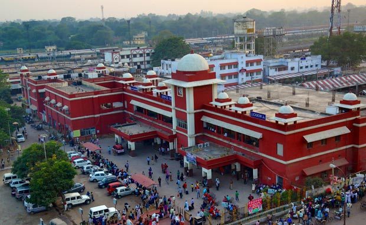

Uttar Pradesh
A Glimpse of the Entire Nation

"It was during the Aryan Inhabitation in the region when epics of Mahabharata,
Ramayana, Brahmanas and puranas were written."
The history of Uttar Pradesh is very much associated with the broad history of India. It dates back to 4000 years. Formerly the area of Uttar Pradesh was occupied by the Aryans or The Dasas and their main occupation was agriculture. The Aryans, through conquests occupied the adjoining areas too.
They laid the foundations their civilisation in the region.It was during The Aryan inhabitation in the region that epics of Mahabharata, Ramayana, Brahmanas and Puranas were written.
The state is the heart of Mahabharata War. The Kosala Kingdom of Ayodhya is said to have been incarnated in the city of Mathura.
It was around the middle of the 1st Millennium BC that Uttar Pradesh saw the advent of Lord Buddha and the spread of Buddhism. Around the time Lord Buddha delivered his 1st Sermon at Dhamek Stupa in Sarnath when Uttar Pradesh was under the Magadh rule. Here Chaukhandi Stupa marks the spot where Lord Buddha met his disciples.

"In due course of time, Uttar Pradesh witnessed the decadence of Mughal rule and advent of the British.
The Mughal influence was restricted to the Doab region. "
Besides Kuru, Panchalas, Vatsas and Videhas etc. formed the early region of the state. These regions were known as Madhyadesa. During Ashoka's region, several public welfare works were taken up. During the rule of Empire, Buddhism and Jainism developed in this region. It was a period of administrative and economic advancement.
The historical background of Uttar Pradesh has a lot to do with advent of Muslim rule. This period witnessed the subjugation of the Rajputs whose power was confined to a few pockets of Rajasthan. Uttar Pradesh reached the peak of Prosperity during the Mughal rule and particularly during the rule of Emperor Akhbar.
The British East India Company came into contact with rulers of Awadh during the region of third Nawab of Awadh. There is no doubt that the history of Uttar Pradesh has run concurrently with the history of the country during and after the British rule, but it is also well-known and that the contribution of the people of the satte in the national freedom movement had been significant. Uttar Pradesh also played a key role in te 1857 War of Independence.
Uttar Pradesh has seen it all, from the rule of Rama to the rule of British.
.jpg)